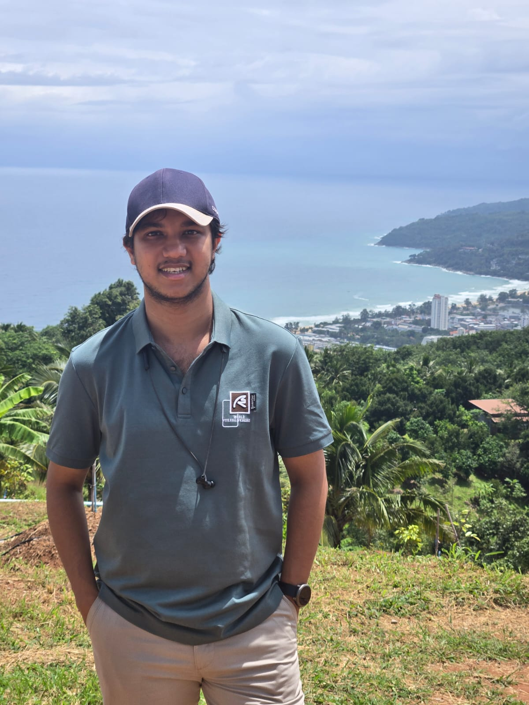

B.Sc in CSE, RUET | ML/AI Engineer at Vivasoft Limited, Dhaka
I build machine learning systems that learn from data they can’t see all at once, and run on hardware that can’t afford waste. My research focuses on federated learning under non-IID data, medical imaging, efficient foundation models, and low-resource speech.
Open to research collaborations and PhD opportunities — drop me an email or find me on LinkedIn.

About
I’m a machine learning engineer at Vivasoft Limited in Dhaka, where I build speech and language systems that run in production. I’ve led teams of five and eight engineers to ship speech recognition for noisy Bangla call-center audio, real-time speech-to-speech agents, and retrieval-augmented generation systems, often optimizing down to the CUDA level when latency matters.
Alongside this work, I do independent research on federated learning for settings where data can’t be pooled, such as hospitals sharing medical images or airlines monitoring engine health. I’m most interested in methods that stay reliable when clients’ data differ and when communication and compute budgets are tight. I work measurement-first: I reproduce baselines carefully, profile where the cost actually goes, and let those findings shape what I propose next.
Federated learning
Non-IID clients, personalization, robustness, privacy, and communication efficiency.
Medical imaging
Segmentation and diagnosis across sites, cross-centre generalization, and label efficiency.
Efficient ML
Quantization, PEFT (LoRA, QLoRA), and inference optimization down to CUDA.
Speech
Low-resource, noisy, and code-switched recognition, with Bangla as a focus.
Publications
FedQuaDx: Multi-Stage Quantization and Diffusion-Guided Personalization for Non-IID Collaborative Diagnosis
A. S. M. Mustakim Rahman Siddique, Biprodip Pal
Under reviewFederated learningMedical imaging
A personalized federated framework for non-IID medical imaging that pairs multi-stage model quantization with diffusion-guided representation learning, reducing communication while improving per-client diagnostic accuracy.
CARBO: Clustering and Rotation-Based Oversampling for Class Imbalance Learning
Mahit Kumar Paul, Biprodip Pal, A. H. M. Sarowar Sattar, A. S. M. Mustakim Rahman Siddique, Md Al Mehedi Hasan
A structure-aware oversampling method that clusters minority samples and generates synthetic data through rotation, improving classification on imbalanced datasets.
@article{Paul2024CARBO,
author = {Paul, Mahit Kumar and Pal, Biprodip and Sattar, A. H. M. Sarowar and Siddique, A. S. M. M. R. and Hasan, Md. Al Mehedi},
title = {CARBO: Clustering and rotation based oversampling for class imbalance learning},
journal = {Knowledge-Based Systems},
volume = {300},
pages = {112196},
year = {2024},
doi = {10.1016/j.knosys.2024.112196},
url = {https://www.sciencedirect.com/science/article/abs/pii/S095070512400830X}
}
Independent research
Self-directed projects with code and full reports on GitHub.
Medical imagingFederated learning
EMCAD replication and FedTriad: federated polyp segmentation
I reproduced EMCAD (CVPR 2024) with a PVTv2-b2 encoder on CVC-ClinicDB over five independent runs, then used what I measured to write three follow-up research proposals.
94.85 ± 0.37test Dice, 50 epochs (paper: 95.21 at 200)
10.58 GFLOPs measured at 352² (paper: 10.59 G)
55.9×less federated upload with FedTriad vs. FedAvg
About 93% of inference cost sits in the encoder, so decoder-only efficiency work is capped near 7%.
Found and verified a height/width transposition bug in the polyp data loader that costs about 0.13 Dice.
FedTriad keeps the LayerNorm encoder frozen, averages decoder weights, and keeps all decoder BatchNorm local.
Federated learning for aircraft engine health monitoring
Five simulated airlines train a dual-head CNN-GRU for remaining-useful-life regression and early fault detection on non-IID data, with engine-level splits to avoid trajectory leakage.
14.02RMSE, federated (centralized: 16.17)
0.997AUROC for fault detection
7research questions studied
Weighted BCE raised fault recall to 0.967 under client class imbalance, at a cost in precision.
Membership signal was measurable from client updates; a detection filter recovered most near-failure behaviour under poisoning.
Reported negative results too: the drift trigger missed injected drift, and sensor adapters underperformed a common-sensor baseline.
FL-QAT: a benchmark for quantized federated communication
Compares vanilla FedProx with adapter-based FL under FP32, INT8, and INT4 client–server communication on lung ultrasound, brain tumor, and diabetic retinopathy datasets, using MobileNetV2, ResNet18, and ViT-B/16.
It includes quantization-aware training with error feedback, configurable uplink and downlink quantization, and Dirichlet-controlled non-IID splits.
Rajshahi University of Engineering and Technology (RUET), Department of CSE.
B.Sc. thesis, 2023Supervisor: Mahit Kumar Paul
Trustworthy federated learning via blockchain-based model aggregation and verification
I proposed a decentralized federated learning framework that replaces the central aggregation server with blockchain consensus, removing the single point of trust and failure in FedAvg-style systems.
Designed a smart-contract protocol that verifies and aggregates client updates, improving auditability and resistance to malicious or corrupted contributions.
Evaluated on MNIST, Fashion-MNIST, and CIFAR-10, weighing blockchain communication and latency overhead against gains in trust and robustness.
Applied ML projects
Systems I built and shipped at Vivasoft and on my own.
ProductionReal-time
Real-time Bangla voice agent
An interruptible speech assistant with VAD-based segmentation, turn detection, fine-tuned ASR, low-latency TTS, and RAG-based answers over WebRTC. I optimized the ASR and TTS stages at the CUDA level for streaming latency.
WebRTC
CUDA
NeMo Conformer
Piper TTS
ProductionBengali ASR
Bengali call-center audio analytics
ASR, speaker diarization, sentiment, and topic detection with automated reports. I fine-tuned Conformer and Whisper Medium with a custom Bengali tokenizer, improving WER and CER on noisy, low-bitrate audio, and served them on CPU with CTranslate2 and oneMKL.
Whisper
Wav2Vec2
Faster Whisper
Go (Gin)
Applied researchGemma 12B
Efficient adaptation of open-weight LLMs
Adapted Gemma 12B for domain-specific generation with LoRA and QLoRA, studying how fine-tuning strategy, instruction data, and inference settings affect quality and cost, and evaluated quantized deployment with Gemma E4B.
Transformers
PEFT
QLoRA
ONNX
ProductionEnterprise
Tiger Agent: enterprise RAG chatbot
A retrieval-augmented chatbot with document extraction, hybrid search over a vector database, prompt generation, and streamed responses through APIs for frontend integration.
Weaviate
LangChain
FastAPI
Server-sent events
Backend engineering
The production-systems side of the work: services, data, and reliability behind the ML.
Distributed systems & microservices
Designed and consolidated service architectures, reducing 7 microservices to 2 core services while improving deployment efficiency by approximately 70%.
API architecture & integration
Built scalable REST APIs, service integrations, and gateway-driven architectures with a focus on reliability, maintainability, and clean service boundaries.
Database & data engineering
Designed data models and implemented transactional workflows, batch processing, inventory management, and efficient data-access patterns.
Performance & optimization
Improved backend efficiency through code refactoring, query optimization, asynchronous processing, and resource-conscious service design.
Reliability & testing
Implemented unit testing, error handling, fault-tolerant integrations, and maintainable code practices for production-grade applications.
Production engineering
Worked across the software delivery lifecycle, from system design and implementation to deployment, debugging, integration, and maintenance.
Experience and Education
Software Engineer (ML/AI)
Nov 2023 — Present
Vivasoft Limited, Dhaka
Led two cross-functional engineering teams (5 and 8 engineers) delivering an AI job-crawler platform and a real-time, interruptible Bangla voice agent over WebRTC, with VAD-based segmentation, turn detection, and CUDA-level ASR/TTS optimization for streaming latency.
Fine-tuned Whisper, Wav2Vec2, and NVIDIA NeMo Conformer with a custom Bengali tokenizer, improving WER and CER on noisy, low-bitrate call-center audio, then served the models on CPU with CTranslate2 and oneMKL.
Built a Bengali call-center analytics pipeline combining ASR, speaker diarization, sentiment, and topic detection with automated reporting.
Designed and shipped Tiger Agent, an enterprise RAG chatbot with document extraction and hybrid dense + BM25 search over a Weaviate vector database, streaming responses to the frontend over server-sent events.
Used LoRA and QLoRA with quantized inference to cut memory and training cost while keeping ASR accuracy.
Refactored Go and Python services for about 30% better performance.
Associate Software Engineer
Aug 2023 — Oct 2023
Vivasoft Limited, Dhaka
Consolidated 7 microservices into 2 core services, cutting redundant deployments and improving deployment efficiency by about 70%.
Designed data models and transactional workflows for batch processing and inventory management, with an eye toward efficient data-access patterns.
Hardened services for production with unit tests, structured error handling, and fault-tolerant integrations.
Built Go and Python microservices, schedulers, and REST APIs; built email and Slack notification systems and integrated Kong as the API gateway.
B.Sc. in Computer Science and Engineering
Jan 2018 — Sep 2023
Rajshahi University of Engineering and Technology (RUET), First Class, awarded September 2023
Thesis: a blockchain-based federated learning framework replacing the central aggregation server with smart-contract consensus, evaluated on MNIST, Fashion-MNIST, and CIFAR-10. Supervised by Mahit Kumar Paul.
Government Scholarship, Dhaka Education Board, for academic merit
Coordinator, Vivasoft AI Hackathon 2025
Mentor, Voice AI Agent Building course, Innovative Skills BD; Learnathon 2.0 mentor and Learnathon 3.0 technical point of contact, Geeky Solutions
Let’s talk about research
I’d be glad to hear from faculty and researchers working on federated learning, medical imaging, efficient models, or speech. I’m based in Dhaka, Bangladesh (UTC+6).